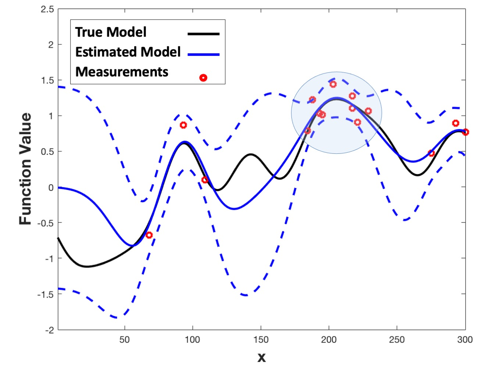
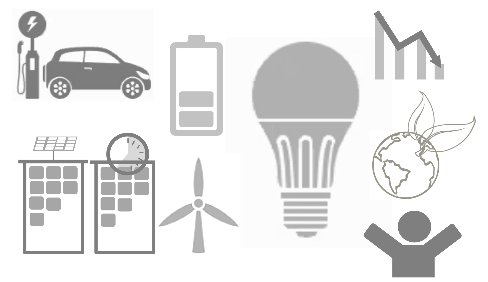
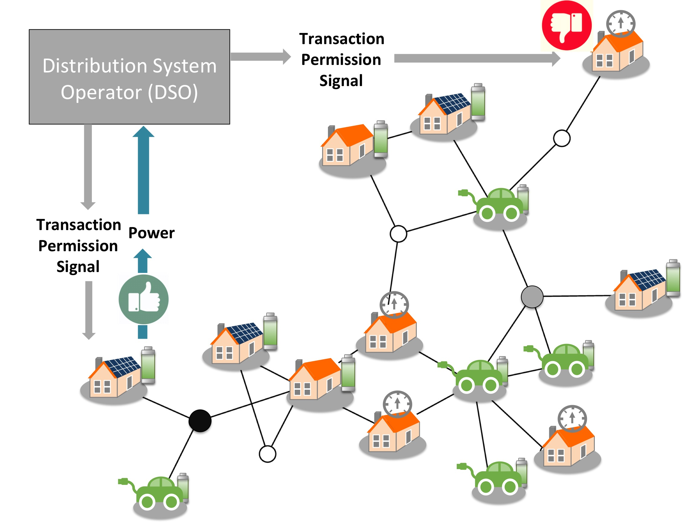
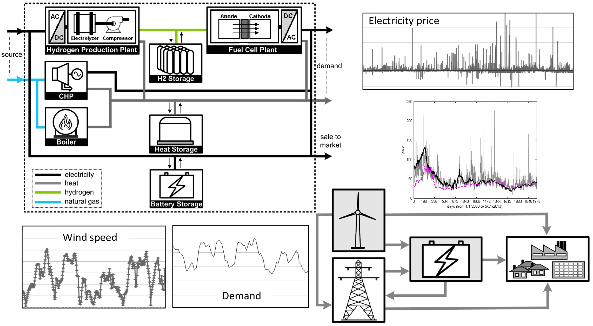
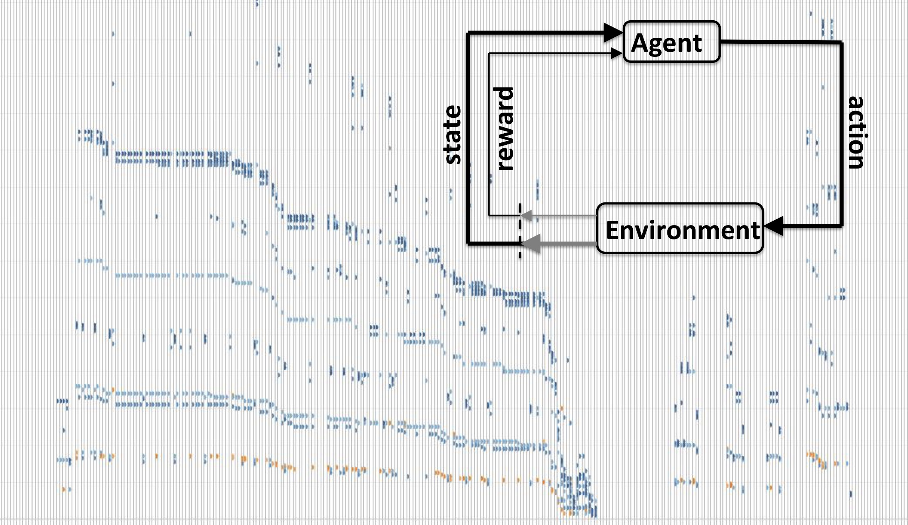
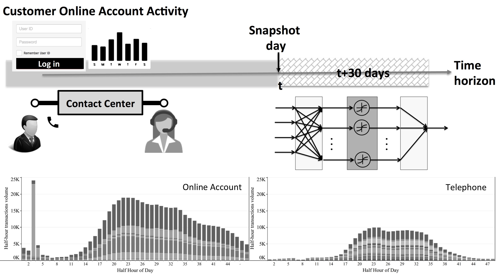

| Home | Publications | Research | Teaching | Students |
|  |
Bayesian Optimization and Adaptive Experimentation |
|  |
Energy Efficiency and Resilience This is a collaboration with Lei Wu, Philip Odonkor, and Ricardo A. Collado (Stevens). Funding: PSEG (Public Service Electric & Gas) Foundation |
|  |
A Nonbinding Commitment Modeling and Control for Deployment of Distributed Flexible Energy Resources This is a collaboration with Boris Defourny (Lehigh University). Funding: National Science Foundation 1610302 To learn more about this project, see here |
|
Smart Marketing: Scalable Analytics to Maximize Campaign Effectiveness Funding: Accenture |
|
|  |
High Performance Computational Stochastic and Robust Optimization for Energy System Analysis Funding: Natural Sciences and Engineering Research Council of Canada (NSERC) |
|  |
Liquidity Patterns in Dark Pools and Trading Strategies This is a collaboration with Ricardo A. Collado (Stevens). Funding: Clearpool Algorithmic Trading Group To learn more about this project, see here |
|  |
Insurance Contact Center Data Analytics This is a collaboration with Jose Ramirez-Marquez (Stevens). Funding: Accenture |